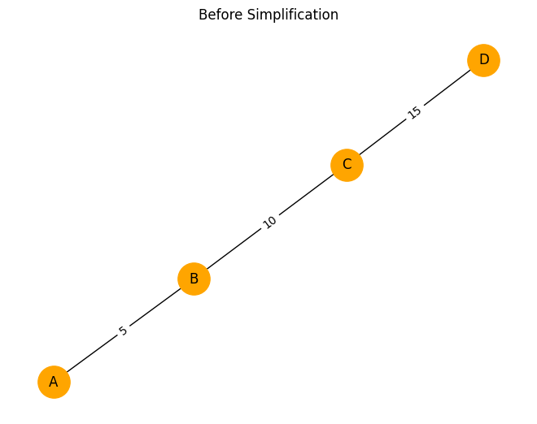

Problem 1
1. Graph Representation of the Circuit
Modeling electrical circuits using graph theory provides a structured way to analyze even the most complex configurations. In this representation, we treat:
- Nodes as electrical junctions.
- Edges as resistors.
- Weights on edges as resistance values in ohms \((\Omega)\).
1.1 Nodes and Edges
Let the circuit be represented by a graph \(G = (V, E)\), where: - \(V\) is the set of nodes, \(V = \{v_1, v_2, \dots, v_n\}\). - \(E\) is the set of edges, where each edge \(e_{ij} \in E\) connects two nodes \(v_i\) and \(v_j\) and carries a resistance \(R_{ij} > 0\).
Each resistor is an edge: $$ e_{ij} = (v_i, v_j, R_{ij}) $$
1.2 Adjacency Matrix
Define the adjacency matrix \(A\) of the graph such that: $$ A_{ij} = \begin{cases} \frac{1}{R_{ij}}, & \text{if } e_{ij} \in E \ 0, & \text{otherwise} \end{cases} $$
This matrix encodes the conductance (inverse of resistance) between nodes.
1.3 Resistance as Edge Weights
The resistance between two nodes \(v_i\) and \(v_j\) is represented by the weight of the edge \(e_{ij}\): $$ w(e_{ij}) = R_{ij} $$
Weights are strictly positive: $$ \forall e_{ij} \in E, \quad R_{ij} \in \mathbb{R}^+, \quad R_{ij} > 0 $$
1.4 Multiple Edges and Parallel Resistors
If multiple resistors connect the same pair of nodes (i.e., parallel resistors), they are represented by multiple edges or combined into one with equivalent resistance:
1.5 Directed vs Undirected Graphs
Circuits are modeled using undirected graphs: $$ e_{ij} = e_{ji} $$
Because resistance is symmetric: \(R_{ij} = R_{ji}\).
1.6 Example: Simple Triangle Circuit
Given a triangle circuit with three nodes and three resistors:
- Nodes: \(V = \{A, B, C\}\)
- Edges:
- \(R_{AB} = 2\ \Omega\)
- \(R_{BC} = 3\ \Omega\)
- \(R_{CA} = 4\ \Omega\)
Graphically: - \(e_{AB} = (A, B, 2)\) - \(e_{BC} = (B, C, 3)\) - \(e_{CA} = (C, A, 4)\)
Then: $$ A = \begin{bmatrix} 0 & \frac{1}{2} & \frac{1}{4} \ \frac{1}{2} & 0 & \frac{1}{3} \ \frac{1}{4} & \frac{1}{3} & 0 \end{bmatrix} $$
1.7 Summary
Graph-theoretic modeling allows:
- Systematic abstraction of circuit elements.
- Encoding resistances as edge weights.
- Laying the foundation for automated simplification and analysis using algorithms.
2. Definition of the Problem
The goal is to compute the equivalent resistance between two specific nodes in an electrical network: the START and END nodes. These nodes serve as the terminals across which a voltage is applied or current flows.
2.1 Problem Statement
Given: - A connected, weighted, undirected graph \(G = (V, E)\). - Each edge \(e_{ij} \in E\) has a weight \(R_{ij} > 0\) representing resistance in ohms. - Two distinguished nodes: \(\text{START} = v_s\) and \(\text{END} = v_t\).
Objective: Determine the total equivalent resistance \(R_{\text{eq}}(v_s, v_t)\) between node \(v_s\) and node \(v_t\).
2.2 Physical Interpretation
If a voltage source \(V\) is applied between START and END, and the resulting current is \(I\), then the equivalent resistance is: $$ R_{\text{eq}} = \frac{V}{I} $$
In this context, \(R_{\text{eq}}\) encapsulates the effect of all possible paths and resistor configurations between the two nodes.
2.3 Electrical Law Basis
The computation respects Ohm's Law and Kirchhoff's Laws:
-
Ohm’s Law: $$ V = IR $$
-
Kirchhoff’s Current Law (KCL): $$ \sum I_{\text{in}} = \sum I_{\text{out}} \quad \text{(at each node)} $$
-
Kirchhoff’s Voltage Law (KVL): $$ \sum_{\text{loop}} V = 0 $$
These laws constrain how voltages and currents behave across the network and define the effective resistance between terminals.
2.4 Path Considerations
All possible current paths between START and END contribute to the total current. The resistance is affected by:
-
Series connections: resistances add. $$ R_{\text{eq}} = R_1 + R_2 + \cdots + R_n $$
-
Parallel connections: conductances add. $$ \frac{1}{R_{\text{eq}}} = \frac{1}{R_1} + \frac{1}{R_2} + \cdots + \frac{1}{R_n} $$
The algorithm must detect and handle these patterns in arbitrary arrangements.
2.5 Graph-Based Reformulation
In graph-theoretic terms: - START and END are fixed nodes \(v_s, v_t \in V\). - Determine an effective edge weight \(R_{\text{eq}}(v_s, v_t)\) that represents the aggregate resistance of the entire graph between those two nodes.
This involves simplifying the graph iteratively until only a single edge between \(v_s\) and \(v_t\) remains: $$ G \rightarrow G' \quad \text{where} \quad G' = {v_s, v_t, R_{\text{eq}}} $$
2.6 Applications
- Power distribution analysis
- Circuit optimization and simplification
- Preprocessing for SPICE-like simulators
- Educational tools for visualizing electrical behavior
2.7 Summary
To solve the problem: - Identify START (\(v_s\)) and END (\(v_t\)). - Represent the circuit as a graph \(G = (V, E)\) with resistances as edge weights. - Use electrical and graph-theoretical laws to reduce the network. - Output the scalar value \(R_{\text{eq}}(v_s, v_t)\) representing the total resistance between the two terminals.
3. Graph Traversal and Pattern Recognition
To compute equivalent resistance in a circuit graph, the system must identify structural patterns that correspond to series, parallel, and complex resistor arrangements. This section outlines how to detect these configurations using graph traversal and pattern recognition techniques.
3.1 Series Connections (Linear Chains)
Definition: A series connection occurs when two or more resistors are connected end-to-end, with no branching paths between them.
Graph Condition:
If node \(v_i\) has exactly two neighbors \(v_{i-1}\) and \(v_{i+1}\) and is not START or END, then \(v_i\) is part of a linear chain: $$ \deg(v_i) = 2, \quad v_i \notin {\text{START}, \text{END}} $$
Series Reduction Formula:
If resistors \(R_1\) and \(R_2\) are in series: $$ R_{\text{eq}} = R_1 + R_2 $$
Graph Simplification:
Replace two edges \((v_{i-1}, v_i, R_1)\) and \((v_i, v_{i+1}, R_2)\) with a single edge: $$ (v_{i-1}, v_{i+1}, R_{\text{eq}}) $$
Remove \(v_i\) from the graph: $$ V \leftarrow V \setminus {v_i} $$
3.2 Parallel Connections (Multiple Paths)
Definition: Resistors are in parallel if they connect the same pair of nodes via multiple independent paths.
Graph Condition:
If multiple edges exist between the same pair of nodes \(v_i\) and \(v_j\): $$ \exists\, {e_1, e_2, \dots, e_n} \subset E \quad \text{such that} \quad \forall k,\, e_k = (v_i, v_j, R_k) $$
Parallel Reduction Formula:
The equivalent resistance of \(n\) parallel resistors is: $$ \frac{1}{R_{\text{eq}}} = \sum_{k=1}^{n} \frac{1}{R_k} $$
Graph Simplification:
Replace all \(n\) edges with a single edge \((v_i, v_j, R_{\text{eq}})\).
3.3 Identifying Cycles (Complex Topologies)
Definition: A cycle is a closed loop in the graph where the current can circulate in more than one direction.
Graph Condition:
A cycle exists if a Depth-First Search (DFS) or Breadth-First Search (BFS) encounters a visited node that is not its parent: $$ \text{DFS}(v) \rightarrow \text{back edge} \Rightarrow \text{cycle} $$
Cycles often correspond to: - Multiple series/parallel combinations - Bridges and mesh circuits
Cycle Detection Algorithm:
Use DFS to identify cycles: 1. Mark all nodes as unvisited. 2. Start DFS from START node. 3. If DFS revisits a node that is not the immediate parent, a cycle exists.
3.4 Handling Complex Subgraphs
Once cycles are found: - Try series and parallel simplification locally within the cycle. - Use graph contraction or Y-Δ (star-delta) transformations if needed.
3.5 Summary
Graph traversal techniques enable the recognition of key resistor arrangements:
- Series: Linear chains (nodes with degree 2).
- Parallel: Multiple edges between two nodes.
- Cycles: Detected using DFS or BFS; may require advanced simplifications.
These patterns are critical for recursively reducing the graph into a single equivalent resistance between START and END.
4. Graph Simplification Rules
Once series, parallel, and cyclic patterns have been identified in the circuit graph, we apply graph simplification rules to reduce the network into a simpler equivalent form. This process is repeated iteratively until only a single equivalent resistor remains between the START and END nodes.
4.1 Series Simplification
Condition: Node \(v\) connects exactly two neighbors \(u\) and \(w\): $$ \deg(v) = 2, \quad v \notin {\text{START}, \text{END}} $$
Edges: - \(e_{uv} = (u, v, R_1)\) - \(e_{vw} = (v, w, R_2)\)
Action: Replace with one edge: $$ e_{uw} = (u, w, R_1 + R_2) $$
Remove node \(v\) and both edges \(e_{uv}\), \(e_{vw}\) from the graph.
4.2 Parallel Simplification
Condition: Multiple edges between the same pair of nodes: $$ e_1 = (u, v, R_1), \quad e_2 = (u, v, R_2), \quad \dots $$
Action: Combine into one edge: $$ \frac{1}{R_{\text{eq}}} = \sum_{k=1}^{n} \frac{1}{R_k} $$
Replace with: $$ e_{\text{eq}} = (u, v, R_{\text{eq}}) $$
4.3 Self-loops
Condition: An edge connects a node to itself: $$ e = (v, v, R) $$
Action: Remove. Self-loops do not contribute to paths between START and END.
4.4 Cycles and Complex Topologies
Condition: A subgraph contains a closed loop or mesh.
Actions: - Attempt local series/parallel simplification inside the cycle. - If the cycle is not reducible via series/parallel, apply: - Δ–Y (Delta–Wye) Transformations - Y–Δ (Wye–Delta) Transformations
These allow conversion between triangle and star configurations: - Delta to Wye: $$ R_a = \frac{R_{ab} R_{ac}}{R_{ab} + R_{bc} + R_{ca}}, \quad \text{(and similarly for } R_b, R_c\text{)} $$ - Wye to Delta: $$ R_{ab} = \frac{R_a + R_b + R_a R_b / R_c} $$
4.5 Node Merging
When two nodes are connected by a simplified edge and no other connections, merge them: - Replace both with a single new node. - Update all incident edges accordingly.
This step simplifies the structure and prepares for the next reduction iteration.
4.6 Termination Condition
Simplification is complete when the graph contains only two nodes: $$ V = {\text{START}, \text{END}} $$
And one edge: $$ E = {(\text{START}, \text{END}, R_{\text{eq}})} $$
4.7 Summary
These simplification rules allow the reduction of arbitrarily complex resistor networks. By combining physical laws and graph operations, we can transform the circuit graph step-by-step until the equivalent resistance between START and END is explicitly computed.
5. Path and Connectivity Analysis
Before and during simplification, it's essential to analyze the connectivity of the circuit graph. Ensuring that all possible paths between START and END are accounted for is critical to preserving the electrical integrity of the network and guaranteeing correct computation of equivalent resistance.
5.1 Path Enumeration Between START and END
To fully capture the circuit behavior, we must identify all paths that allow current to flow from the START node \(v_s\) to the END node \(v_t\).
Algorithms for Path Discovery:
- Depth-First Search (DFS):
- Recursively explores all branches.
- Effective for detecting cycles and nested paths.
- Breadth-First Search (BFS):
- Explores shortest paths first.
- Useful for level-based reduction.
Multiple Paths:
If more than one path exists between \(v_s\) and \(v_t\), those paths may represent parallel resistor configurations.
5.2 Maintaining Connectivity During Simplification
When reducing the circuit, it's essential that the simplification: - Preserves the number of paths between \(v_s\) and \(v_t\). - Does not disconnect any components of the circuit relevant to current flow. - Respects bridge and articulation points, which are critical for connectivity.
Rule of Preservation:
Let \(G\) be the original graph and \(G'\) be the simplified graph. Then: $$ \text{Paths}{G}(v_s \to v_t) \cong \text{Paths}{G'}(v_s \to v_t) $$
Where \(\cong\) indicates equivalence in path logic (though not necessarily in count).
5.3 Bridge and Articulation Detection
A bridge (or cut-edge) is an edge whose removal disconnects the graph: - Must not be removed prematurely. - Usually part of a series connection.
An articulation point is a node whose removal increases the number of connected components: - Often a junction in nested or branching configurations.
Use DFS to identify such components: - Maintain a discovery time and low-link value for each node.
5.4 Connectivity Constraints in Simplification
When applying series or parallel rules: - Ensure that merging or removing nodes/edges does not affect the existence of a valid \(v_s\)–\(v_t\) path. - Avoid collapsing nodes or edges that are critical to overall connectivity.
5.5 Dynamic Path Verification
After each simplification step:
- Optionally recompute the number of \(v_s\)–\(v_t\) paths to verify integrity.
- Use:
- Path counting algorithms (e.g., DFS with memoization)
- Connectivity checks using networkx.is_connected() (if using Python)
5.6 Connectivity-Aware Reduction
A safe approach is to: 1. Detect and reduce safe series/parallel patterns. 2. Re-check connectivity from START to END. 3. Repeat until no further simplification is possible without altering critical paths.
5.7 Summary
Connectivity analysis ensures: - All contributing paths to current flow are respected. - Simplifications do not invalidate the topology. - The algorithm maintains logical and electrical correctness throughout reduction.
Preserving correct path structure is just as important as computing resistance values.
✅ 6. Input Handling
import networkx as nx
import matplotlib.pyplot as plt
# Sample input: edge list (node1, node2, resistance)
edge_list = [
('A', 'B', 2.0),
('B', 'C', 3.0),
('A', 'C', 6.0)
]
start_node = 'A'
end_node = 'C'
# Build graph
G = nx.Graph()
for u, v, r in edge_list:
if r < 0:
raise ValueError("Resistance must be non-negative.")
G.add_edge(u, v, resistance=r)
# Validate connectivity
if not nx.has_path(G, start_node, end_node):
raise ValueError("Graph is not connected between START and END nodes.")
# Plot input graph
pos = nx.spring_layout(G)
labels = nx.get_edge_attributes(G, 'resistance')
nx.draw(G, pos, with_labels=True, node_color='lightblue', node_size=800)
nx.draw_networkx_edge_labels(G, pos, edge_labels=labels)
plt.title("Input Circuit Graph")
plt.show()
✅ 7. Data Structures
import networkx as nx
import matplotlib.pyplot as plt
# Create a graph with adjacency list structure using networkx
G = nx.Graph()
# Add edges
G.add_edge('1', '2', resistance=5)
G.add_edge('2', '3', resistance=10)
G.add_edge('3', '4', resistance=5)
G.add_edge('2', '4', resistance=15)
# Adjacency list view
print("Adjacency List with Resistances:")
for node in G.adjacency():
for neighbor, attrs in node[1].items():
print(f"{node[0]} --({attrs['resistance']}Ω)--> {neighbor}")
# Plot graph
pos = nx.spring_layout(G)
labels = nx.get_edge_attributes(G, 'resistance')
nx.draw(G, pos, with_labels=True, node_color='lightgreen', node_size=700)
nx.draw_networkx_edge_labels(G, pos, edge_labels=labels)
plt.title("Graph Structure (Adjacency List)")
plt.show()
✅ 8. Resistance Calculation (Series Simplification Example)
import networkx as nx
import matplotlib.pyplot as plt
def simplify_series(G):
simplified = G.copy()
for node in list(G.nodes):
if node in (start_node, end_node): continue
if G.degree[node] == 2:
neighbors = list(G.neighbors(node))
if simplified.has_edge(neighbors[0], node) and simplified.has_edge(node, neighbors[1]):
r1 = G[node][neighbors[0]]['resistance']
r2 = G[node][neighbors[1]]['resistance']
new_r = r1 + r2
simplified.add_edge(neighbors[0], neighbors[1], resistance=new_r)
simplified.remove_node(node)
return simplified
# Create initial series graph
G = nx.Graph()
start_node = 'A'
end_node = 'D'
G.add_edge('A', 'B', resistance=5)
G.add_edge('B', 'C', resistance=10)
G.add_edge('C', 'D', resistance=15)
# Simplify series
G_simplified = simplify_series(G)
# Plot before
plt.figure()
pos = nx.spring_layout(G)
labels = nx.get_edge_attributes(G, 'resistance')
nx.draw(G, pos, with_labels=True, node_color='orange', node_size=800)
nx.draw_networkx_edge_labels(G, pos, edge_labels=labels)
plt.title("Before Simplification")
plt.show()
# Plot after
plt.figure()
pos = nx.spring_layout(G_simplified)
labels = nx.get_edge_attributes(G_simplified, 'resistance')
nx.draw(G_simplified, pos, with_labels=True, node_color='salmon', node_size=800)
nx.draw_networkx_edge_labels(G_simplified, pos, edge_labels=labels)
plt.title("After Series Simplification")
plt.show()

9. Test Cases
Robust testing is essential to verify that the graph-based resistance computation is correct across different circuit configurations. This section outlines a structured approach for selecting and designing test cases.
9.1 Simple Series Configuration
Circuit: - \(R_1 = 2\ \Omega\) - \(R_2 = 3\ \Omega\) - \(R_3 = 5\ \Omega\) (in series)
Expected Result: $$ R_{\text{eq}} = R_1 + R_2 + R_3 = 10\ \Omega $$
Graph: - Nodes: \(A \to B \to C \to D\) - Edges: \((A, B, 2),\ (B, C, 3),\ (C, D, 5)\)
9.2 Simple Parallel Configuration
Circuit: - \(R_1 = 4\ \Omega\) - \(R_2 = 6\ \Omega\) (in parallel)
Expected Result: $$ \frac{1}{R_{\text{eq}}} = \frac{1}{R_1} + \frac{1}{R_2} = \frac{1}{4} + \frac{1}{6} = \frac{5}{12} \Rightarrow R_{\text{eq}} = 2.4\ \Omega $$
Graph: - Nodes: \(A \leftrightarrow B\) with two parallel edges
9.3 Nested Configuration
Circuit: - Series of two branches: - Branch 1: \(R = 3\ \Omega\) - Branch 2: parallel: \(R_1 = 2\ \Omega\), \(R_2 = 6\ \Omega\)
Expected Result: $$ \frac{1}{R_{\text{branch2}}} = \frac{1}{2} + \frac{1}{6} = \frac{2}{3}, \quad R_{\text{branch2}} = 1.5\ \Omega \ R_{\text{eq}} = 3 + 1.5 = 4.5\ \Omega $$
9.4 Complex Graph with Cycles
Circuit: A triangle of resistors: - \(R_{AB} = 2\ \Omega\) - \(R_{BC} = 3\ \Omega\) - \(R_{CA} = 4\ \Omega\)
Expected Result: Use either mesh analysis or Δ–Y transformation to compute: $$ R_{\text{eq}}(A, B) = \text{Non-trivial result (approx. 2.545)} $$
Purpose: Test cycle detection and advanced reduction logic.
9.5 Stress Test: Random Mesh Network
- Generate a random graph with:
- 6–10 nodes
- Random resistance values between 1–10 \(\Omega\)
- Ensure START and END are connected
- Use brute-force or Kirchhoff-based numerical solver for comparison
10. Validation
Validation confirms that the algorithm yields correct and consistent results. It ensures not only correct numerical outputs but also structural integrity throughout graph simplification.
10.1 Known-Result Verification
- Each test case has a mathematically known expected result.
- Compare: $$ R_{\text{computed}} \approx R_{\text{expected}} $$
- Use relative or absolute error threshold: $$ \left| \frac{R_{\text{computed}} - R_{\text{expected}}}{R_{\text{expected}}} \right| < \epsilon $$
Typical \(\epsilon\) threshold: \(10^{-5}\)
10.2 Preservation of START–END Path
After each simplification step: - Confirm START and END are still connected: $$ \text{has_path}(G', \text{START}, \text{END}) = \text{True} $$ - No isolated subgraphs should remain between START and END.
10.3 Intermediate Visualization
- Plot intermediate graphs (before/after simplification)
- Annotate edge resistances and simplified patterns
- Visually inspect that:
- Only safe transformations occurred
- No accidental merges or removals affecting key connectivity
10.4 Consistency under Graph Isomorphism
Reordering nodes or edges in the input graph should not change the result: - Test equivalent graphs with shuffled labels or edge order - Validate: $$ R_{\text{eq}}^{(G_1)} = R_{\text{eq}}^{(G_2)} $$
10.5 Summary
Testing and validation are critical to: - Catch edge cases in simplification logic - Ensure numerical and structural correctness - Build confidence that the algorithm generalizes across a wide variety of circuit topologies